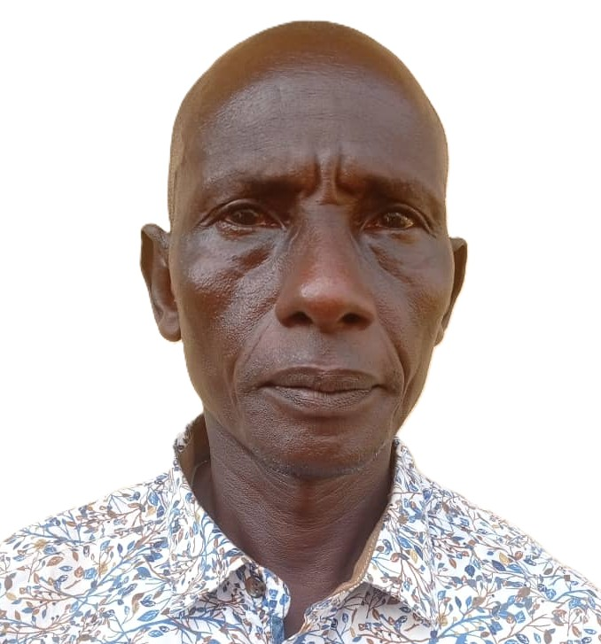
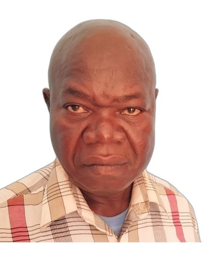

Président National des Assemblées de Dieu de Centrafrique
Sous sa direction, les Assemblées de Dieu de Centrafrique poursuivent leur mission d'évangélisation, de formation et d'implantation d'Églises pentecôtistes à travers toute la République Centrafricaine.

Vice-Président
Secrétaire Général
Secrétaire Général Adjoint
Trésorière Générale

Trésorier Général Adjoint